Fixed Income Securities
BUSS254 Investments
Lecture Outline
- Coupon bonds vs. Zero (coupon) bonds
- Zero prices and zero (spot) rates
- Forward rates
- Yield to Maturity
- Swap rates
- Interest rate risk: measurement and management
- Term structure of interest rates
Fixed Income: Basics
Fixed Income Securities
A promise to deliver future known cash flows.
- Examples: money market instruments, treasury bonds, notes, and bills, corporate bonds etc.
Terminologies
Indenture: contract between issuer and holders specifying interest, principal, and other items (covenants).
Par (Face) value: the amount of money paid at maturity.
Maturity: the end date of the security’s life.
Coupon payments: interest payments made periodically through the life of the security.
Coupon rate = Coupon/Par value
Current yield = Coupon/Price
Yield to Maturity: the internal rate of return (IRR) of a bond investment
Types of Bonds
Callable bonds
The issuer can repurchase the bond at a specified call price before the maturity.
Deferred callable bonds: come with a period of call protection (not-callable period).
Puttable bonds: gives the issuer the option
Convertible bonds
Give bondholders an option to exchange each bond for a specified number of shares of common stock (conversion ratio)
Deferred callable bonds: come with a period of call protection (not-callable period).
Floating-Rate Bonds
- Coupon rate varies inversely with a benchmark interest rate.
International bonds
Foreign bonds: foreign issuer issues in domestic currency
- Yankee, Samurai, Bulldog, Dim-sum bonds etc.
Eurobonds: issue in foreign country with domestic currency
- Eurodollar, Euroyen, Euro-euro etc.
Types of Bonds (cont’d)
Asset-Backed Bonds
The income from a specified group of assets is used to service the debt.
Business revenue: movie sales, real estate etc.
Catastrophe Bonds
- Payments halted/cancelled if earthquake, terror, pandemic etc.
Indexed Bonds
Payments tied to an index
Treasury Inflation Protected Securities (TIPS).
Coupon Bonds
The quoted coupon rate is annualized.
- If the quoted coupon rate is \(c\), and bond maturity is time \(T\), then each $1 par value (quantity) of the bonds pays out cash flows (number of payments per year: \(N\))
Institutionally speaking, the prices of government bonds form the basis for the pricing in fixed income markets.
All other fixed income instruments, including derivatives, are priced in relation to the prices of these benchmark bonds
Zero-Coupon Bonds
It is convenient to unpack the original coupon bonds into individual zero-coupon bonds, or zeroes - bonds with a single cash flow equal to face value at maturity.
Treasury zeroes called STRIPS (Separate Trading of Registered Interest and Principal of Securities) are actually traded in a secondary market (since 2007 in Korea, 1960s in US).
The process of detaching the interest payments from the bond is called coupon stripping
- E.g., a 10-year bond with a $40,000 face value and a 5%, semi-annual coupon payments: 21 zero-coupon bonds can be created (=20 semi-annual coupon + the bond itself). Each stripped coupon has a $1,000 face value. All 21 securities are distinct and are traded separately in the market.
Zero Prices or ``Discount Factors’’
Let \(d_t\) denote the price today of the \(t\)-year zero that pays off $1 in \(t\) years.
- This is also called the \(t\)-year ``discount factor.’’
A Coupon Bond as a Portfolio of Zeroes
- $10,000 par of a one and a half year, 8.5% bond makes the following payments:
This is the same as a portfolio of three different zeroes:
$425 par of a 6-month zero
$425 par of a 1-year zero
$10425 par of a 1 1/2-year zero
Also same as an annuity + a zero
No Arbitrage and The Law of One Price
The Law of One Price: assets which offer the same cash flows must sell for the same price.
Why? If not, then one could buy the cheaper asset and sell the more expensive, making a profit today with no cost in the future.
This would be an arbitrage opportunity, which could not persist in equilibrium in a frictionless market
An arbitrage trading strategy: always generates non-negative cash flows and sometimes strictly positive cash flows.
However, when there are ``limits to arbitrage’’ such as transaction costs, capital constraints, or barriers to trading across markets, then violations of the law of one price can persist.
- For example, prices of Treasury STRIPS and Treasury bonds don’t fit the pricing relationship exactly
Example
| Years to maturity | Discount factor | Bond cash flow | Value |
|---|---|---|---|
| 0.5 | 0.9730 | $425 | $414 |
| 1 | 0.9476 | $425 | $403 |
| 1.5 | 0.9222 | $10,425 | $9,614 |
| $10,430 |
The value of $10,000 par of a 1.5-year 8.5% Treasury coupon bond based on the zero prices (discount factors) in the table is $10,430.
- If the 1.5-year 8.5% coupon bond deviates significantly from this value, it’d create an arbitrage opportunity.
The LOOP implies that a coupon bond price is (per $1 face value):
\[ P(c,T) = (c/2)\times d_{0.5} + (c/2)\times d_{1} + ... + (1+c/2)\times d_{T} \]
Deriving Zero Prices from Coupon Bond Prices
- Consider three coupon bonds below. Find discount factors.
| Bonds | Years to maturity | Coupon | Prices |
|---|---|---|---|
| A | 0.5 | 4.250% | 99.40625 |
| B | 1 | 4.375% | 98.96875 |
| C | 1.5 | 8.500% | 104.31250 |
\((1+0.0425/2)d_{0.5} = 0.9940625 \Rightarrow d_{0.5}=0.973\)
\((0.04375/2)d_{0.5} + (1+0.04375/2)d_1 = 0.9896875 \Rightarrow d_1=0.948\)
\((0.085/2)d_{0.5} + (0.085/2)d_1 + (1+0.085/2)d_{1.5} = 1.043125 \Rightarrow d_{1.5}=0.922\), which closely match the actual STRIPS prices
You just found a term structure.
This process is called the bootstrap method.
Bootstrapping
\[ P(T) = \sum_{t=1}^{2T} \$c\frac{1}{(1+r_t/2)^{t}} + \$M\frac{1}{(1+r_T/2)^{2T}} \]
\[ \Rightarrow r_T = \left( \frac{c+M}{ P(T) - \sum_{t=1}^{2T-1} \frac{c}{(1+r_t/2)^{t}}} \right)^{\frac{1}{2T}} -1 \]
- Using matrices: Suppose we have \(T\) coupon bonds and the maximum maturity among these bond is \(T\) years.
\[ \begin{bmatrix} P(T_{0.5}) \\ \cdots \\ P(T_T) \end{bmatrix} = \begin{bmatrix} CF^1_{0.5} & \dots & CF^1_T \\ \cdots & \ddots & \cdots \\ CF^T_{0.5} & \dots & CF^T_T \end{bmatrix} \begin{bmatrix} d_{0.5} \\ \cdots \\ d_T \end{bmatrix} \]
\[ \Rightarrow P = CF \times D \]
\[ \Rightarrow D = CF^{-1}P \]
Bootstrapping (cont’d)
\[ P= \begin{bmatrix} 101.50 \\ 99.80 \end{bmatrix} \text{ and } CF = \begin{bmatrix} 105.25 & 0 \\ 4.43 & 104.43 \end{bmatrix} \]
\[ D = CF^{-1}P \]
- Use
mmultandminversefunctions in Excel.
Regression Approach
- The bootstrap method is only feasible when the number of coupon bonds = the number of time periods.
\[ \text{Pricing error: } P - CF \times D \equiv \epsilon \]
\[ \text{Solve } \min_{D} \sum_{i=1}^{N} \epsilon_i^2 = \sum_{i=1}^{N} \left( P(T_i)- \sum_{t=1}^{T} CF_t^i D_t^i \right) \]
\[ \text{The solution: } D = (CF'CF)^{-1}(CF'P) \]
- Instead of finding the precise values for \(D\), we try to find the best estimate of \(D\) that predicts \(P\).
Parametric Yield Curve Models
The resulting estimated yield curve is usually not smooth
Interpolation is often used to calculate the discount factor/spot rate for maturity that we do not have.
Parametric function to model the discount factor or the spot curve (or the forward curve) can give you the desired ``smoothness’’.
- At the potential expense of higher pricing error.
Example: The Polynominal Yield Curve
\[ r_t = \alpha + \beta_1 t + \beta_2 t^2 + \beta_3 t^3 \]
Popular models: Nelson-Seigel model, Svennson model etc.
Excercise
- Consider the following three bonds
| Bond | t=1 | t=2 | t=3 | Price |
|---|---|---|---|---|
| A | 100 | 0 | 0 | 96.0 |
| B | 5 | 105 | 0 | 99.3 |
| C | 10 | 10 | 110 | 108.8 |
- There is bond D whose price is $84 and pays 100 in t=3. Is there an arbitrage opportunity?
\[ \begin{bmatrix} 96.0 \\ 99.3 \\ 108.8 \end{bmatrix} = \begin{bmatrix} 100 & 0 & 0 \\ 5 & 105 & 0 \\ 10 & 10 & 110 \end{bmatrix} \begin{bmatrix} DF_1 \\ \cdots \\ DF_T \end{bmatrix} \]
\(DF_1 = 0.96, DF_2 = 0.90, DF_3=0.82.\)
Hence, no-arbitrage price, \(Price(D) = 0.82 \times 100 = 82\)
Excercise (cont’d)
- Can you find an abitrage strategy (portfolio)?
\[ \begin{bmatrix} -96 & -99.3 & -108.8 & -84 \\ 100 & 5 & 10 & 0 \\ 0 & 105 & 10 & 0 \\ 0 & 0 & 110 & 100 \end{bmatrix} \begin{bmatrix} x_A \\ x_B \\ x_C \\ x_D \end{bmatrix} = \begin{bmatrix} 1 \\ 0 \\ 0 \\ 0 \end{bmatrix} \]
- Solve for vector \(X\). The choice of the payoff on the RHS is arbitrary.
Zero (Spot) Rates
People prefer to quote interest rate than prices because it is easier to understand.
If you buy a \(t\)-year zero and hold it to maturity, you lend at rate \(r_t\) where \(r_t\) is defined by
\[ d_t \times \left( 1+ \frac{r_t}{2} \right)^{2t} =1, \]
or
\[ r_t = 2 \times \left( d_t^{-\frac{1}{2t}} -1 \right) \]
Call \(r_t\) the \(t\)-year zero rate or \(t\)-year discount rate.
Spot rate: a spot rate is the rate on a spot loan, directly observable from, e.g., STRIPS price
Zero rate: extracted from, e.g., Treasury (coupon) bonds. Proxy for spot rate.
Obviously, we can use either \(d_t\) or \(r_t\) to value bonds.
Example
Suppose STRIPS rates are as follows:
0.5-year rate: 5.54%
1-year rate: 5.45%
1.5-year rate: 5.47%
What is 0.5-year and 1-year zero prices?
\[ d_t = \frac{1}{\left( 1+ \frac{r_t}{2} \right)^{2t}}. \]
Therefore,
\[ d_{0.5} = \frac{1}{\left( 1+ \frac{0.0554}{2} \right)^{2\times 0.5}} = 0.973, \]
and
\[ d_{1} = \frac{1}{\left( 1+ \frac{0.0545}{2} \right)^{2\times 1}} = 0.9476. \]
and
\[ d_{1.5}=? \]
Yield to Maturity
Yield to maturity is a convenient way to express price in terms of a single rate of interest (IRR).
It is the single \(y\) that solves:
\[ \frac{c/2}{(1+r_{0.5}/2)^{1}} + \frac{c/2}{(1+r_1/2)^2} + ... + \frac{c/2+M}{(1+r_T/2)^{2T}} \]
\[ = \frac{c/2}{(1+y/2)^{1}} + \frac{c/2}{(1+y/2)^2} + ... + \frac{c/2+M}{(1+y/2)^{2T}} \]
Realized return can be different from the YTM.
Purchase price, coupon, sales price, and reinvestment rate of coupon
Ex-post return is equal to its initial yield if all of the coupons are reinvested at the initial yield
Yield to Maturity (cont’d)
Example: The 1.5-year, 8.5%-coupon bond
Using the zero rates 5.54%, 5.45%, and 5.47%, the bond price is 1.043066 per dollar par value.
This implies a yield of 5.4704%:
\[ \begin{aligned} 1. 043066 &= \frac{0.0425}{(1+0.0554/2)^1}+\frac{0.0425}{(1+0.0545/2)^2}+\frac{1.0425}{(1+0.0547/2)^3} \\ &= \frac{0.0425}{(1+0.54704/2)^1}+\frac{0.0425}{(1+0.54704/2)^2}+\frac{1.0425}{(1+0.54704/2)^3} \end{aligned} \]
YTM \(\approx\) weighted average of the \(t\)-zero rates, where the weight is proportional to the relative PV of cash flow at \(t\). (Will see this later)
YTM (and IRR) assumes that coupons are reinvested at the YTM.
Yield Curves for Zeroes and 6% Bonds
A yield curve plots yields or zero rates for different maturities of bonds. It depicts the term structure of interest rates.
- A yield curve should be based on a group of homogeneous bonds (e.g. credit and liquidity)
Why does the coupon bond yield curve lie below the zero curve?
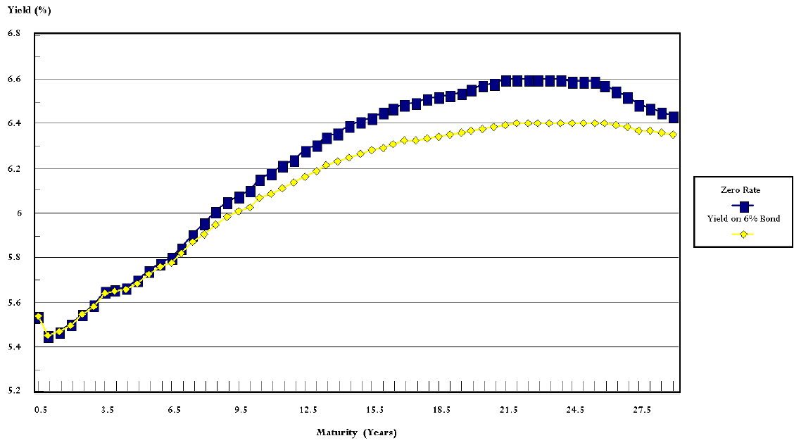 Source: Prof. Jennifer Carpenter, 2017
The Coupon Effect
- Yields vary across bonds for different reasons – credit, liquidity, maturity. It turns out they also vary with coupon.
If the yield curve is not flat, then bonds with the same maturity but different coupons will have different yields.
If the yield curve is upward-sloping, then for any given maturity, higher coupon bonds will have lower yields.
- PV of \(c\) and the associated zero rates before maturity contributes more to the YTM when \(c\) is larger. As zero rates are increasing in time, the weighted average becomes smaller, i.e., the yield is smaller.
If the yield curve is downward-sloping, then for any given maturity, higher coupon bonds will have higher yields.
- Therefore, it is not necessarily true that the bond with a higher yield is a superior investment.
Yield Curve of US Treasury Zero Rates
This graph plots the zero rates implied by Treasury coupon bond prices (line), and the actual traded Treasury STRIPS rates (dots).
It shows that the Law of One Price holds very closely across the US Treasury coupon bond and STRIPS markets.
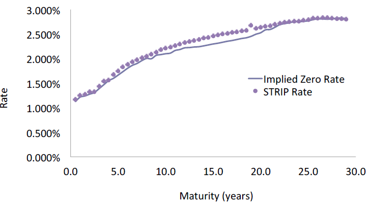 Prof. Jennifer Carpenter, 2017
Yield and Price
Present value of a coupon bond with $1 par value
\[ P = \frac{c/2}{y/2} \left( 1 - \frac{1}{(1+y/2)^{2T}} \right) + \frac{1}{(1+y/2)^{2T}} \]
(Bond = Annuity + Zero)
If \(c=y, P=1\) (the bond is priced at par)
If \(c>y, P>1\) (the bond is priced at a premium to par)
If \(c<y, P<1\) (the bond is priced at a discount)
The yield on a zero is the zero rate: \(c=0 ; y=r_T\)
Price and Time
Bond price should converge to the par value at maturity.
For a premium bond, each coupon adds to the current bond price.
For a discount bond, each coupon erodes the current bond price.
As time passes, we lose each coupon.
Hence, bond price decreases for a premium bond and increases for a discount bond.
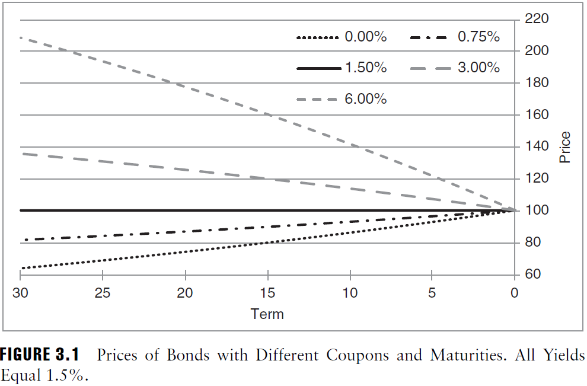
Forward Rates
The rate on a forward loan, which is an agreement today to lend money at some time in the future and to be repaid some time after that.
Forward rates are related to spot rates by the no-arbitrage condition.
\[ \left( 1+ \frac{r_t}{2} \right)^{2t} = \left( 1+ \frac{r_{t-0.5}}{2} \right)^{2t-1} \left( 1+ \frac{f_{t-0.5,t}}{2} \right) \]
- Denote $ f_{0,0.5} = f_{0.5}$. By definition, $ f_{0.5} = r_{0.5}$
\[ \left( 1+ \frac{r_t}{2} \right)^{2t} = \left( 1+ \frac{f_{0.5}}{2} \right) \left( 1+ \frac{f_{1}}{2} \right) ... \left( 1+ \frac{f_{t}}{2} \right) \]
- Forward rates can also be expressed in terms of discount factors
\[ 1+ \frac{f_{t-0.5,t}}{2} = \frac{d_{t-0.5}}{d_t} \]
- Multiple-period forward rate, \(f_{t-\tau,t}\)?
Interest Rate Swaps
Let’s digress…
Swaps and bonds together comprise a significant portion of fixed income markets, and swaps, because they are relatively liquid, have become benchmarks against which to evaluate other fixed income instruments.
In an interest rate swap, two parties agree to exchange a series of interest payments.
Interest Rate Swaps (cont’d)
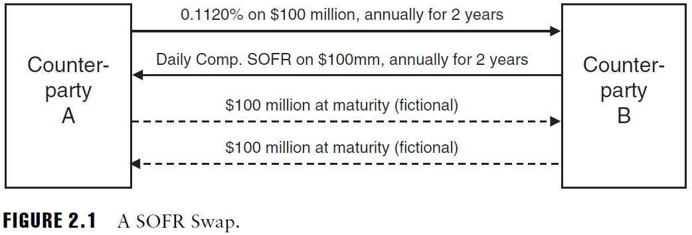
A pays B the fixed swap rate of 0.1120% annually for two years on a notional amount of $100 million.
B pays A daily compounded SOFR annually for two years on this same notional amount.
No cash is exchanged on the trade or settlement date.
The notional amount is never paid or received by either counterparty
Daily SOFR represents the rate on extremely safe, overnight loans made that day (replacing LIBOR in 2021)
Interest Rate Swaps (cont’d)
A SOFR swap follow the actual/360 day-count
Payment on fixed lag:
\[ \$100,000,000 \times 0.1120\% \times \frac{365}{360} = \$113,556 \]
Payment on floating lag. Assume SOFR was 0.10% for five days; 0.50% for 170 days; and 0.01% for 190 days:
\[ \$100,000,000 \left(1+ \frac{0.1\%}{360}\right)^{5} \left(1+ \frac{0.5\%}{360}\right)^{170} \left(1+ \frac{0.01\%}{360}\right)^{190} \]
\[ = \$100,243,071 \]
Term Structure of SOFR Rates
The SOFR curve, for example, gives the fixed rates that can be exchanged for SOFR for various terms.

Pricing Interest Rate Swaps
A: Long in floating-rate bond $ $ B: Long in fixed-rate bond
The value of a floating-rate bond that always pays the fair market rate is worth par, or face amount, today.
\(P_0 = (1+c)M/(1+r_{0.5}) = (1+r_{0.5})M/(1+r_{0.5}) = M\)
The swap has no cash flow at initiation and at maturity.
B buys a fixed-rate bond by borrowing at the floating rate (leveraged long position)
Hence, PV(fixed-rate) = PV(floating-rate) = Par value
The swap rate is determined so that PV(fixed-rate) = Par value.
Swap Rates
Swap rate = Par rate
Par rate (yield): the rate paid on an investment that costs par and promises to repay par at maturity.
Measures the coupon rate where a coupon bond is traded at par.
If the yield curve is flat, then the par yield = YTM
The par-yield is often used as a reference for pricing new issues: Can determine the coupon rate that a new bond with a given maturity will pay in order to sell at par today.
Given a (spot) yield curve, we can extract par rate from a coupon bond (\(M\): par value):
\[ M = \sum_{t=1}^{2T}\frac{(c^*/2) M}{(1+r_{t/2}/2)^{2t}} + \frac{M}{(1+r_T/2)^{2T}} \]
\[ c^* = 2 \times \frac{1- \frac{1}{(1+r_T/2)^{2T}}}{\sum_{t=1}^{2T}\frac{1}{(1+r_{t/2}/2)^{2t}}} = 2 \times \frac{1-d_{T}}{\sum_{t=1}^{2T} d_{t/2}} \]
Note, here, we assume cash flows (coupon) occurs exactly every half year.
Swap rate is approaximately the average of spot rates.
Extracting discount factors from SOFR swap rates
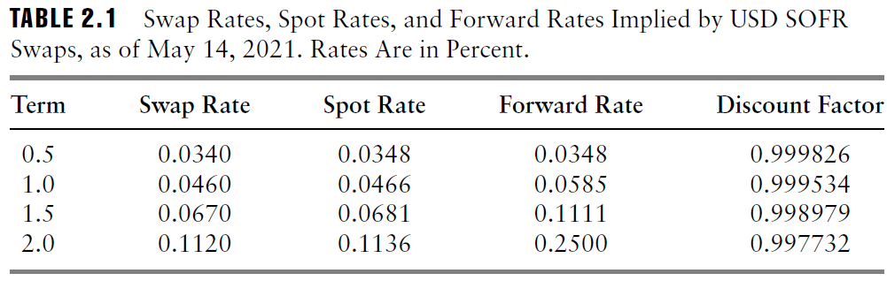
SOFR swaps \(\le\) 1 year make one payment at maturity. > 1 year typically make one stub payment followed by annual payments to maturity. A 1.5-year swap makes a stub payment after six months and another payment one year later.
\[ \begin{aligned} 100 \left(1+ 0.034\% \frac{184}{360}\right) d_{0.5} &=100 \\ 100 \left(1+ 0.046\% \frac{365}{360}\right) d_{1} &=100 \\ \$0.067 \frac{184}{360}d_{0.5} + 100 \left(1+ 0.067\% \frac{365}{360}\right) d_{1.5} &=100 \\ \$0.112 \frac{184}{360}d_{1} + 100 \left(1+ 0.112\% \frac{365}{360}\right) d_{2} &=100 \end{aligned} \]
Solving for \(d\)’s (can use matrix), you can use discount factors in the table. Can create a yield curve.
Swap, Spot, and Forward Rates
The spot rate approximately equals the average of the forward rates.
\[ \ln \left( 1+ \frac{r_t}{2} \right)^{2t} = \ln \left( 1+ \frac{f_{0.5}}{2} \right) \left( 1+ \frac{f_{1}}{2} \right) ... \left( 1+ \frac{f_{t}}{2} \right) \]
\[ r_t \approx \frac{f_{0.5} + f_{1} + ... + f_{t}}{2t} \]
Spot rates increase when forward rates are greater than spot rates.
When spot rates are increasing, swap (par) rates are below spot rates.

Bond Pricing Between Coupon Payment Dates
Bond price = Quoted price + Accrued interest
Bond price: full/dirty price
Quoted price: flat/clean price
Accrued interest: the portion of the next coupon that the seller has earned but will not receive.
Suppose you purchase $10,000 face amount of the US Treasury 0.625s of 08/15/2030, for settlement on May 17, 2021. The flat/quoted price is 91.78125.
Last coupon payment of \(\$10,000 \times 0.625\% /2 = \$31.25\) on February 15, 2021, and makes its next coupon payment of $31.25 on August 15, 2021.
You pay the seller the accrued interest: $0.625%/2 /181 = 0.15711% $, using the ACT/ACT day-count.
Hence, the full price is \(\$10,000 \times (91.78125\% + 0.15711\%) = \$9,193.836\)
Why not just quote bonds using the full price?
Market convention!
full price changes dramatically over time
When trading bonds day to day, it is more intuitive to follow flat prices and negotiate transactions in those terms
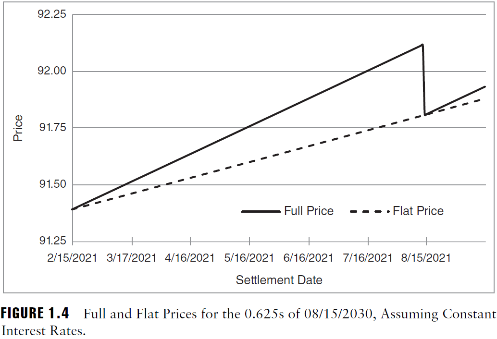
Interest Rate Risk
Interest Rate Risk
Bond investing faces several types of risk: interest rate risk, credit risk, liquidity risk etc.
Our focus: interest rate risk, the change in bond price due to changes in the interest rates in the market.
How to measure the exposure to interest rate risk?
Senario analysis: compute how much bond price would change if interest rate change by \(x\%\).
In the old days without sufficient computing power, this was not easy.
People came up with ``simpler’’ and approximate measure of interest rate risk.
These measures prove to be useful in modern days for commmunication and risk management purpose.
Which Interest Rate?
We want to measure the bond price sensitivity of interest rate.
But which interest rate?
- Spot rate, zero rate, swap rate, forward rate, yield etc. and their term structures (1-, 2-yr rate etc.).
They tend to move together, but not exactly.
We will first study the measures based on yield-to-maturity, i.e., the sensitivity of bond price to a change in yield. That is, set \(r_t = y\) in the bond pricing formula.
They are simpler and widely used in practice.
Dollar Duration and DV01
NB Beware of units (decimal or percentage). It’s confusing!
Dollar duration: $ D_d = - dP/dy $
- The change in the dollar price of a bond for a 1 unit (i.e. 100%) change in interest rates (per $100 face)
\(DV01\) (Dollar Value of 0.01%): $ DV01 = D_d/10,000, $ ($100%=10,000 bps) $
The change in the price of a bond for 1 bps of change in interest rates (per $100 face)
a.k.a Dollar Value of a Basis Point (DVBP), Present Value of a Basis Point (PVBP).
Dollar Duration and DV01 (cont’d)
Par value: 100, Coupon rate: \(c\)
\[ P(y) = \frac{100c}{2} \sum_{t=1}^{2T} \frac{1}{\left( 1+\frac{y}{2} \right)^t} + \frac{100}{\left( 1+\frac{y}{2} \right)^{2T}} \]
\[ P(y) = \frac{100c}{y} \left( 1- \frac{1}{\left( 1+\frac{y}{2} \right)^{2T}} \right) + \frac{1}{\left( 1+\frac{y}{2} \right)^{2T}} \]
Then $DV01 = D_d = dP/dy $.
\[ DV01 =\frac{1}{10,000} \frac{1}{1+\frac{y}{2}} \left[ \frac{100c}{2} \sum_{t=1}^{2T} \frac{t}{2} \frac{1}{\left( 1+\frac{y}{2} \right)^t} + T \frac{100}{\left( 1+\frac{y}{2} \right)^{2T}} \right] \]
\[ DV01 = \frac{1}{10,000} \left[ \frac{100c}{y^2} \left( 1- \frac{1}{\left( 1+\frac{y}{2} \right)^{2T}} \right) + T \left(1 - \frac{c}{y} \right) \frac{100}{\left(1+\frac{y}{2} \right)^{2T+1}} \right] \]
Duration
(Modified or Adjusted) Duration: $ D = - = D_d/P $
- The percent change in price for a 100 basis point change in yield.
\[ D =\frac{1}{P} \frac{1}{1+\frac{y}{2}} \left[ \frac{100c}{2} \sum_{t=1}^{2T} \frac{t}{2} \frac{1}{\left( 1+\frac{y}{2} \right)^t} + T \frac{100}{\left( 1+\frac{y}{2} \right)^{2T}} \right] \]
\[ D = \frac{1}{P} \left[ \frac{100c}{y^2} \left( 1- \frac{1}{\left( 1+\frac{y}{2} \right)^{2T}} \right) + T \left(1 - \frac{c}{y} \right) \frac{100}{\left(1+\frac{y}{2} \right)^{2T+1}} \right] \]
Interpretations
The first derivative of price function, \(P(y)\). The slope (tangent line) of \(P(y)\) at \(y\).
The terms inside the brackets in (3) $ = _{t=1}^{2T} W_t$
- The weighted sum of the times at which cash flows are received, with $W_t = $ the present value of the cash flow received at that time.
The terms inside the brackets in (5) $ = _{t=1}^{2T} _t$
- \(\omega_t = W_t/P\), the present value of the cash flow received at that time divided by the bond price.
Macaulay Duration = Duration \(\times (1+y/2)\)
The first measure of duration was developed by Frederick Macaulay in 1938.
The average maturity of a bond’s cash flows
It approximates minus the percent change in price per 100 bp change in the continuously compounded yield.
Effective Duration
An empirical change in bond price w.r.t change in yield.
Simply replace \(d\) with \(\Delta\). To be more realistic, replace \(y\) with \(r_t\).
Instead of taking derivative, perturbe \(y\) by \(x\) bp and see how much \(P\) changes.
$ D_d = - dP/dy - P/ y$
$ D = - - $
Does not assume parallel shifts in bond yields (talk later).
Useful for bonds with embedded options (e.g. callable bonds, mortgages) and portfolios of bonds, where the price-yield relationship is ``peculiar.’’
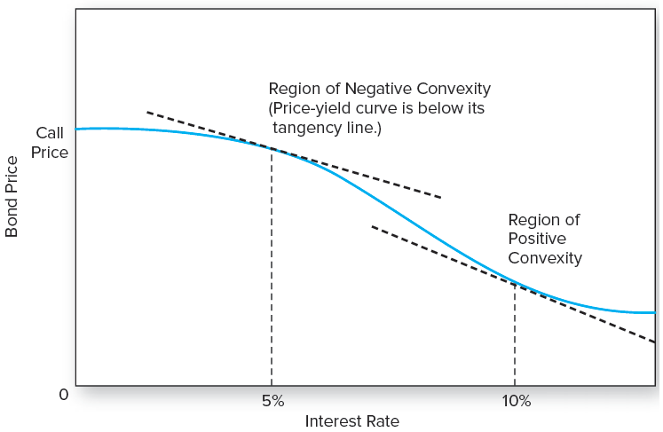
Duration: Example
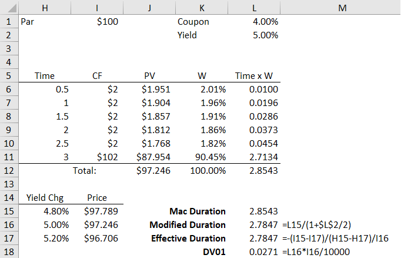
See Excel spreadsheet, Fixed_Income.xlsx
Duration: Graphical Representation
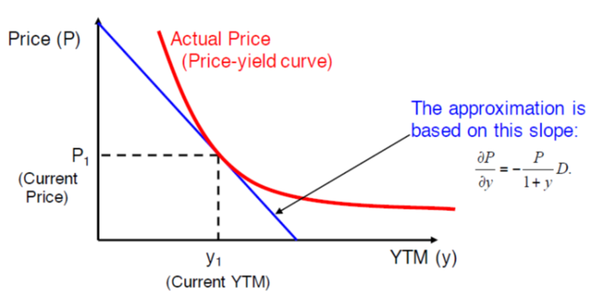
- The approximation using duration can be understood as a tangent line approximation.
\(DV01\) and Duration for Zero-coupon and Par bond
- Zero coupon bonds: set \(c=0\) in (4) and (6). \(P=100/(1+y/2)^{2T}\)
\[ DV01_{c=0} = \frac{T}{100 (1+\frac{y}{2})^{2T+1}} \]
\[ D_{c=0} = \frac{T}{(1+\frac{y}{2})} \]
{\(\$Dur=100T/(1+y/2)^{2T+1}\),Macaulay Duration \(= T\)}
- Par bonds: set $ c = y$ in (4) and (6). \(P=100\).
\[ DV01_{c=y} = \frac{1}{100y} \left(1- \frac{1}{(1+\frac{y}{2})^{2T}}\right) \]
\[ D_{c=y} = \frac{1}{y} \left(1- \frac{1}{(1+\frac{y}{2})^{2T}}\right) \]
Properties of Duration
The average of the time to the bond’s promised cash flows.
A measure of the price sensitivity (semi-elasticity) to a change in YTM.
$ D T$ ($D_{Mac} = T) $ for zero-coupon bonds.
Higher maturity, higher \(D\)
Higher coupon, lower \(D\)
Higher yield (market rate), lower \(D\)
Convexity
The interest rate sensitivity of a bond falls as rates increase
Convexity is a measure of the curvature of the price-rate curve.
- All else equal, the greater, the better.
\[ C = \frac{1}{P} \frac{d^2 P}{d y^2} \]
\[ C = \frac{1}{P(1+\frac{y}{2})^2} \left[\frac{100c}{2} \sum_{t=1}^{2T} \frac{t}{2} \left(\frac{t}{2} +0.5\right)\frac{1}{(1+\frac{y}{2})^t} + T(T+0.5)\frac{100}{(1+\frac{y}{2})^{2T}}\right] \]
Involves quadratic functions of times; convexity increases much faster with maturity than duration.
Convexity: Example
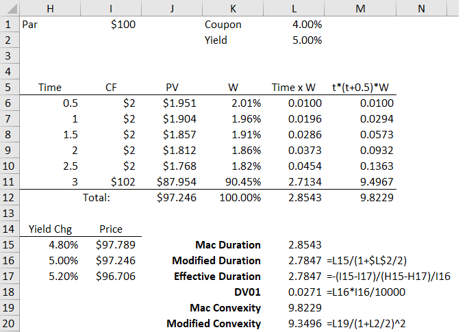
See Excel spreadsheet, Fixed_Income.xlsx
Approximation Using Convexity
The Tayloar series:
\[ f(x)-f(x_0) \approx f'(x_0)(x-x_0) + \frac{1}{2}f''(x_0)(x-x_0)^2 \]
\[ \Rightarrow P(y)-P(y_0) \approx P'(y_0)(y-y_0) + \frac{1}{2}P''(y_0)(y-y_0)^2 \]
\(P'(y_0)\): \(-\)Dollar duration, \(P''(y_0)\): Dollar convexity
\[ \Rightarrow \frac{P(y)-P(y_0)}{P(y)} \approx \frac{P'(y_0)}{P(y)}(y-y_0) + \frac{1}{2}\frac{P''(y_0)}{P(y)}(y-y_0)^2 \]
Percent change in price:
\[ \frac{\Delta P}{P} \approx -D \Delta y + \frac{1}{2} C \Delta y^2 \]
See Excel spreadsheet, Fixed_Income.xlsx
Duration and Convexity of Portfolios
The \(D_d\) (\(DV01\)) of a portfolio is the sum of its component \(D_d\) (\(DV01\)). Let $ P = P_i$.
\[ \frac{dP}{dy} = \sum \frac{dP_i}{dy} \]
The duration of a portfolio is the value-weighted average of its component durations.
\[ -\frac{1}{P}\frac{dP}{dy} = \sum \frac{1}{P} \frac{dP_i}{dy} = \sum \frac{P_i}{P} \frac{1}{P_i} \frac{dP_i}{dy} \]
\[ D_P = \sum \frac{P_i}{P} D_i \]
Similarily, the convexity of a portfolio the value-weighted sum of its component convexities.
Portfolio Yield
The yield of the portfolio, \(y\), is the single discount rate that gives the portfolio the same price as the individual security yields (or zero rates), call them \(y_1, y_2, …, y_n\).
\[ P = \sum P_i (y_i) = \sum P_i (y) \]
Therefore,
\[ 0 = \sum P_i (y) - P_i (y_i) \approx \sum P'_i(y_i)(y-y_i) \]
\[ \Rightarrow y = \frac{\sum P'_i (y_i) y_i}{\sum P'_i(y_i)} \]
The portfolio yield is approximately the dollar-duration weighted average of the individual security (or zero) yields.
- Example: A coupon bond = a portfolio of zeros. The yield of the coupon bond = the weighted average of zeros’ yields.
Assumptions About Term Structure
Note that the interest rate risk sensitivities we consider here is with respect to the change in ``yield to maturity’’.
That is, they examine what happens if the yield changes.
Yield is affected by market interest rates (e.g., zero rates). And we want to measure the sensitivity of bond price to market interest rates.
If the yield curve is flat, i.e., \(r_t=r\), then \(r_t=r=y\).
If the yield curve shifts in parallel by \(x\) bp, then yield changes (approximately) by \(x\) bp.
In this case, our measures are reasonable proxy for interest rate sensitivity. But this is only when the shift is small.
Besides, if the market interest rates move in non-parallel manner, the approximation does a poor job.
Further discussion along this line can be found, e.g., Tuckman and Serrat, Chapter 4, 5, and 6.
Yield vs. Rates
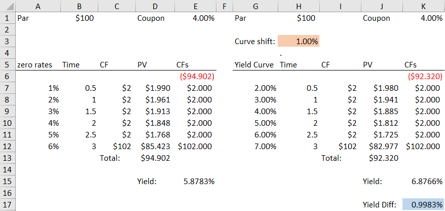
See Excel spreadsheet, Fixed_Income.xlsx
Credit Risk
- Measured by rating agencies such as Moody’s Investor Services, Standard & Poor’s Corporation, and Fitch Investors
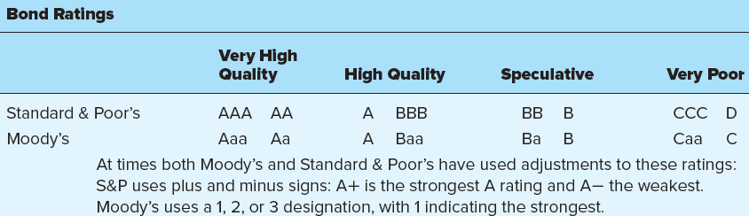
Credit Default Swap (CDS)
- An insurance policy on the default risk of a bond or loan: paying premium for default protection
Collateralized debt obligations (CDO)
- Can be viewed as a mechanism to reallocate credit risk in the fixed-income markets.
Term Structure of Interest Rates
What is the term structure of interest rate?
The relationship between yield to maturity and time to maturity.
The yield curve plots the term structure of interest rate.
Provides useful insight about how the market thinks about future interest rate movements.
Allows central bankers to gauge market expectation about inflation, growth and risks
Allows you to price assets
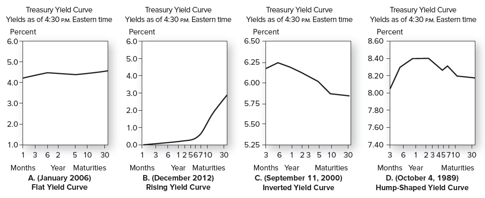
Theories of the Term Structure
The Pure Expectation Hypothesis
Forward rates reflect today’s expectation of what spot rates will be in the future.
No-arbitrage implies \((1+r_2)^2 = (1+r_1)(1+f_{1,2})\).
The PEH suggests that \((1+r_1)(1+f_{1,2})=(1+r_1)(1+E[r_{1,2}])\)
Also, \((1+r_2)^2 = (1+r_1)(1+E[r_{1,2}])\). Hence, \(r_2 \approx \frac{r_1+E[r_{1,2}]}{2}\)
If \(r_2 > r_1\), then $ E[r_{1,2}]>r_1$
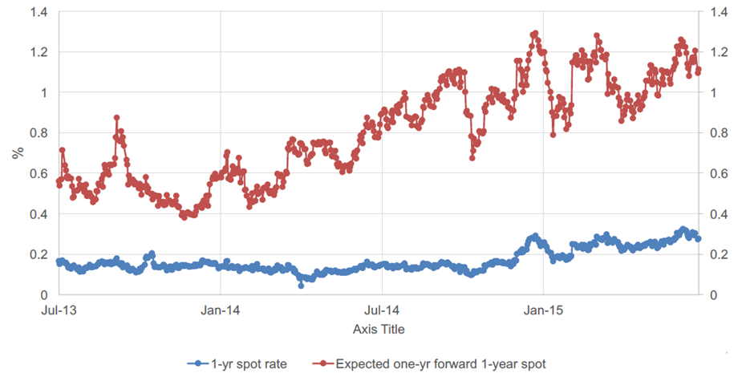
Theories of the Term Structure (cont’d)
The Liquidity Preference Hypothesis
Investors require premium to hold a bond with a particular maturity over another maturity.
Suppose $ r_2 = $.
Even when \(r_1 = E[r_{1,2}]\), i.e., the market does not expect rates to rise, \(r_2 > r_1\) if \(tp_{1,2}>0\).
Alternatively, the no-arbitrage condition suggests that we can define it as \(tp_{1,2} = f_{1,2} - E[r_{1,2}]\)
That is, the excess of the forward rate over pure expectation of future interest rate
The term-premium can then be decomposed into two components.
Price risk premium (increasing with the maturity; First-order): Higher the duration, more sensitive is the price to a change in interest rates;
Convexity premium (decreasing with the maturity, Second-order):
The term-premium can be positive or negative depending on which component dominates
Theories of the Term Structure (cont’d)
Market Segmentation (Preferred Habitat) Hypothesis
Bonds of a given maturity are mainly traded by a particular group of investors.
The supply and demand conditions of a bond with a given maturity are independent on the supply and demand conditions of bonds of other maturity.
Arbitrage opportunity across maturities is missing.
This explanation is less popular nowadays.
Interpreting the Yield Curve
The yield curve contains a mixture of
information about expected returns (risk) on bonds of different maturities and
forecasts of future yield changes
In general, it is difficult to disentangle these two without a model of expected returns or interest rate forecasts
Applications: Risk Management
Asset-Liability Management
Suppose you have liabilities or obligations consisting of a stream of fixed cash flows you must pay in the future.
Pension liabilities
Insurance liabilities
How can you structure an asset portfolio to fund these liabilities?
Immunization
The liabilities have a certain market value. It changes as time passes and as interest rates change.
Construct an asset portfolio with
the same market value and
the same duration as the liabilities
so that the asset value tracks the liability value over time.
Can include derivatives as well as fixed cash flows.
Duration/Market Value Matching
Change in value $ -$D $ change in rates
Matching the dollar duration of assets and liabilities means matching their changes in value if all rates change by the same amount – hedges against parallel yield curve shifts.
Matching market value means liabilities are fully funded.
Hedging against parallel shifts is really just a first step.
Structuring an Asset Portfolio
Suppose your liabilities have market value of $100M and duration of 6.
You want to structure an asset portfolio with the same market value and duration.
Construct an asset portfolio with just two securities:
A bond with price $100 and duration 8
A CMO with price $70 and duration 4
What are the number of units of the bond and CMO in the immunizing asset portfolio?
\[ \begin{aligned} &x \times \$100 + y \times \$70 = \$100M \\ &\frac{x \times \$100}{\$100M}\times 8 + \frac{y \times \$70}{\$100M} \times 4 = 6 \\ & \Rightarrow x = 454,545, y = 714,286 \end{aligned} \]
Simply Dollar Duration Matching
Suppose your liabilities have dollar duration of 100M and your assets have dollar duration 500M
You want to leave your existing assets in place and close the gap by selling interest rate swap contracts.
Suppose each swap contract has present value zero and dollar duration of 10M.
How many contracts must you sell to give your net position zero dollar duration?
\[ \begin{aligned} &\$500M + x \times \$10M = \$100M \\ & \Rightarrow x = -40 \end{aligned} \]
Example: Bank’s Immunization Strategy
Many financial institutions hold short-term liabilities (checking and savings accounts, certificates of deposit, etc.) and long-term assets (car loans, home mortgages, etc.).
| Assets | $300m (D=5 years) | Liab. | $285m (D=3 years) |
|---|---|---|---|
| Equity | $15m (D=\(D_E\) years) |
Duration of a portfolio is the average of the durations of the portfolio’s components: $5 = (285/300)3 + (15/300)D_E $
\(D_E=43\), the bank (and regulators) may worry about this level of duration mismatch.
If the yield increase by 25 bp, equity reduces by 11%!
Example: Bank’s Immunization Strategy (cont’d)
The bank wants to reduce the duration of its equity from 43 to 0. That is, it wants to immunize its portfolio.
Its assets include $80.625 mortgages whose duration is 8 years and other assets $219.38 with duration of 3.9.
If it exchanges all these mortgages for cash, then is the portfolio immunized?
\((80.63/300)0 + (219.38/300)3.9 = (285/300)3+(15/300)D_E\)
\(D_E \approx 0\)
However, the bank gave up the returns from mortgages.
``Zero risk’’ is not (usually) optimal – bank business is to achieve returns by taking some risks.
Limitations of Immunization
As interest rate changes, the duration of the portfolio changes.
Maintaining an immunized portfolio requires continuous adjusting as the rate changes.
Even if the rate doesn’t change, the duration changes over time.
A duration-neutral portfolio is protected when the rates for all maturities change by the same percentage point (i.e., when there is a parallel shift in the yield curve).
Immunization is costly.
- In our example, exchanging mortgages for cash entails giving up future revenue
Example: Market Maker’s Risk Management
A dealer in corporate bonds finds herself with an inventory of $1mm in a 5 year 6.9% bonds (semiannual payments) at the end of the trading day, priced at par.
The bonds are illiquid, so selling them would entail a loss. Holding them overnight is risky, since their price might fall if rates rise.
An alternative to selling the corporate bonds is to short more liquid Treasury bonds. The following bonds are available:
10 yr, 8% Treasury, \(p = \$1,109.0\) per $1,000 face
3 yr, 6.3% Treasury, \(p = \$1,008.1\) per $1,000 face
How much of the 10 year bond would she need to short to hedge? How much of the 3 year bond?
If yields rise by 1% overnight on all the bonds, show the result of the transactions the next day when the short position is closed out.
Example (cont’d)
Find modified duration of the bond to be hedged
- For 5 year 6.9% bond: \(y = 6.9\%, D=4.1688\)
Find modified duration of the bonds to be shorted
For 10 year 8% bond: \(y=6.5\%, D=7.005\)
For 3 year 6.3% bond: \(y = 6.00\%, D = 2.700\)
Find \(x\) and \(y\) in:
$x(7.005) = $1mm(4.1688) x =$593,861.5 $
$y(2.7) = $1mm(4.1688) y = $1,540,720 $
If yields rise by 1% overnight on all the bonds:
For 5 yr, yield to 7.9%,: \(P=\$959.423/1,000=0.959423\), Loss: $($1,000,000)(1-0.959423) = $40,577 $
For 10 year yield to 7.5% \(P=\$1034.81/1109=0.93311\), Loss: \((\$595,167)(1-0.93311) = \$39,810\)
For 3 year yield to 7%: \(P=\$981.42/\$1,008.1=0.97353\), Loss: $($1,543,947)(1-.97353) = $40,861 $
Example (cont’d)
What if the dealer wants the added protection of doing a gamma neutral hedge?
Investment must be both delta neutral and gamma neutral. This requires matching deltas and gammas, and requires investments in both bonds.
\(P1 = \$1 m, D1 = 4.1688, C1 = 21.038\)
\(P2 = ?, D2 = 7.005, C2 = 62.98\)
\(P3 = ?, D3 = 2.700, C3 = 8.939\)
Match hedge ratios:
- $ $1m(4.1688) = P2(7.005) + P3(2.700)$
Match gamma:
- $ $1m(21.038) = P2(62.98) + P3(8.939) $
2 linear equations in two unknowns. Solve for P2 and P3.
Barbells and Bullets
Consider a bullet portfolio invested 100% in a 20-year zero.
- Its duration \(\approx 20\), convexity \(\approx 20^2=400\)
Consider a barbell portfolio invested 50% in a 10-year zero and 50% in a 30-year zero.
Its duration \(\approx 0.5(10) + 0.5(30)=20\).
Its convexity \(\approx 0.5(10)^2 + 0.5(30)^2=500\)
More generally, for a given duration, the more disperse the cash flows are the greater the convexity. Example: a coupon bond has greater convexity than the same-duration zero.
- A Barbell strategy takes advantage of increased convexity by duplicating the duration of an existing bond using a portfolio with one shorter-term bond and one longer-term bond.
Barbells and Bullets: Example
Suppose an investor holds $1-million value of the 5-year Treasury note.
This could be sold and used to purchase a portfolio of $\(x\)-million value of the 2-year note and $\((1-x)\)-million value of the 10-year note.
| Issue | YTM(%) | Duration | Convexity |
|---|---|---|---|
| 2-year | 0.55 | 1.91 | 0.05 |
| 5-year | 1.40 | 4.73 | 0.25 |
| 10-year | 2.00 | 8.82 | 0.87 |
Find \(x\) so that \(1.91 x + 8.8 (1-x) = 4.73\). \(x=0.592\).
The convexity of the portfolio is \(0.05(0.592)+0.87 (1-0.592)=0.38\)
Does the Barbell Always Outperform the Bullet?
Should we always prefer a higher-convexity portfolio?
Markets recognize the contribution of convexity as rates change and generate lower yield for higher convexity portfolios.
If there is an immediate parallel shift in interest rates either up or down (high volatility), the barbell will outperform the bullet.
If interest rates stay the same, the bullet will outperform the barbell in terms of yield.
If this shift is not parallel, anything could happen.
Tread-off: yield vs. convexity!
References
BKM, Chapters 14, 15, and 16
Tuckman and Serrat, Chapters 1 through 4
Prof. Jennifer Carpenter’s lecture notes